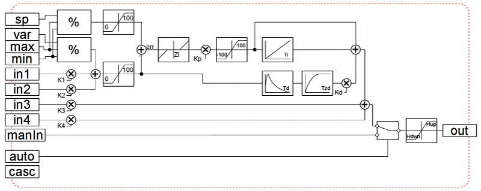

| Module | Name | Version | License | Source | Languages | Platforms | Type | Author | Description |
|---|---|---|---|---|---|---|---|---|---|
| FLibComplex1 | Complex1 function's lib | 1.1 | GPL2 | spec_FLibComplex1.so | en,uk,ru,de | x86,x86_64,ARM | Special | Roman Savochenko Maxim Lysenko (2009) — the page translation |
Provides the library of functions compatible with SCADA Complex1 of the firm "DIYA" Ltd. |
Contents
- 1 Alarm (alarm) <111>
- 2 Condition '<' (cond_lt) <239>
- 3 Condition '>' (cond_gt) <240>
- 4 Full condition (cond_full) <513>
- 5 Digital block (digitBlock) <252>
- 6 Division (div) <526>
- 7 Exponent (exp) <476>
- 8 Flow (flow) <235>
- 9 Iterator (increment) <181>
- 10 Lag (lag) <121>
- 11 Simple multiplication(mult) <259>
- 12 Multiplication + Division(multDiv) <468>
- 13 PID regulator (pid) <745>
- 14 Power (pow) <564>
- 15 Selection (select) <156>
- 16 Simple integrator (sum) <404>
- 17 Sum with the division (sum_div) <518>
- 18 Sum with the multiplication. (sum_mult) <483>
- 19 User programming API
Special module FLibComplex1 provides the OpenSCADA system with the static library of functions compatible with SCADA Complex1 of firm SIC "DIYA". These functions are used in the SCADA system Complex1 in the form of algoblocks to create inner-computings on the virtual controller. Provision of the library of these functions lets to do the transfer of computational algorithms from the system Complex1.
To address the functions of the library you can use static call address "Special.FLibComplex1.{Func}()" or dynamic "SYS.Special.FLibComplex1["{Func}"].call()", "SYS.Special.FLibComplex1.{Func}()". Where {Func} — function identifier in the library.
Below is the description of each function of the library. For each function it was evaluated the execution time. Measurements were made on the system with the following parameters: Athlon 64 3000 + (ALTLinux 4.0 (32bit)) by measuring the total execution time of the function when you call it 1000 times. Sampling was carried out of the five calculations, rounded to integer. Time is in angle brackets and is measured in microseconds.
1 Alarm (alarm) <111>
Description: Set alarm sign in the case of going out of the variable for the specified boundary.
Formula:
out = if(val>max || val<min) true; else false;
2 Condition '<' (cond_lt) <239>
Description: Operation of branching in accordance with the condition "<".
Formula:
out = if(in1<(in2_1*in2_2*in2_3*in2_4)) in3_1*in3_2*in3_3*in3_4;
else in4_1*in4_2*in4_3*in4_4;
3 Condition '>' (cond_gt) <240>
Description: Operation of branching in accordance with the condition ">".
Formula:
out = if(in1>(in2_1*in2_2*in2_3*in2_4)) in3_1*in3_2*in3_3*in3_4;
else in4_1*in4_2*in4_3*in4_4;
4 Full condition (cond_full) <513>
Description: Full check of the conditions, including more, less and equal.
Formula:
out = if(in1<(in2_1*in2_2*in2_3*in2_4)) in3_1*in3_2*in3_3*in3_4;
else if( in1>(in4_1*in4_2*in4_3*in4_4) in5_1*in5_2*in5_3*in5_4;
else in6_1*in6_2*in6_3*in6_4;
5 Digital block (digitBlock) <252>
Description: Function contains the control algorithm of digital signals acquisition for valves and pumps that contain: signs of "Open", "Close" and the command "Open", "Close", "Stop". Supports work with pulse commands, i.e. can read the signal through the specified period of time.
Parameters:
| ID | Parameter | Type | Mode |
|---|---|---|---|
| cmdOpen | Command "Open" | Bool | Out |
| cmdClose | Command "Close" | Bool | Out |
| cmdStop | Command "Stop" | Bool | Out |
| stOpen | Position "Opened" | Bool | In |
| stClose | Position "Closed" | Bool | In |
| tCmd | Command hold time (s) | Integer | In |
| frq | Frequency of calculation (milliseconds) | Integer | In |
6 Division (div) <526>
Description: Makes division of the set of variables.
Formula:
out = (in1_1*in1_2*in1_3*in1_4*in1_5 + in2_1*in2_2*in2_3*in2_4*in2_5 + in3) /
(in4_1*in4_2*in4_3*in4_4*in4_5 + in5_1*in5_2*in5_3*in5_4*in5_5 + in6);
7 Exponent (exp) <476>
Description: Calculating the exponent under the group of variables.
Formula:
out = exp (in1_1*in1_2*in1_3*in1_4*in1_5 + (in2_1*in2_2*in2_3*in2_4*in2_5+in3) /
(in4_1*in4_2*in4_3*in4_4*in4_5+in5) )
8 Flow (flow) <235>
Description: Calculation of the gas flow.
Formula:
f = K1*((K3+K4*x)^K2);
9 Iterator (increment) <181>
Description: Iterative calculation with the increment specifying. Gain ratio for different directions is different.
Formula:
out = if( in1 > in2 ) in2 + in3*(in1-in2);
else in2 - in4*(in2-in1);
10 Lag (lag) <121>
Description:Variation of the variable lag. Practice, this is the filter without reference to time.
Formula:
y = y - Klag*( y - x );
11 Simple multiplication(mult) <259>
Description: Simple multiplication with division.
Formula:
out = (in1_1*in1_2*in1_3*in1_4*in1_5*in1_6)/
(in2_1*in2_2*in2_3*in2_4);
12 Multiplication + Division(multDiv) <468>
Description: Branched multiplication + division.
Formula:
out = in1_1*in1_2*in1_3*in1_4*in1_5*
(in2_1*in2_2*in2_3*in2_4*in2_5+(in3_1*in3_2*in3_3*in3_4*in3_5)/
(in4_1*in4_2*in4_3*in4_4*in4_5));
13 PID regulator (pid) <745>
Description: Proportional-integral-differential regulator.
Parameters:
| ID | Parameter | Type | Mode | By defaults |
|---|---|---|---|---|
| var | Variable | Real | In | 0 |
| sp | Set point | Real | Out | 0 |
| max | Maximum of scale | Real | In | 100 |
| min | Minimum of scale | Real | In | 0 |
| manIn | Manual input (%) | Real | In | 0 |
| out | Out (%) | Real | Return | 0 |
| auto | Auto | Bool | In | 0 |
| casc | Cascade | Bool | In | 0 |
| Kp | Kp | Real | In | 1 |
| Ti | Ti (ms) | Integer | In | 1000 |
| Kd | Kd | Real | In | 1 |
| Td | Td (ms) | Integer | In | 0 |
| Tzd | Td lag (ms) | Integer | In | 0 |
| Hup | Upper limit of the out (%) | Real | In | 100 |
| Hdwn | Lower limit of the out (%) | Real | In | 0 |
| Zi | Insensitivity (%) | Real | In | 1 |
| followSp | Follow sp from var on manual | Bool | In | 1 |
| K1 | Koef. of the input 1 | Real | In | 0 |
| in1 | Input 1 | Real | In | 0 |
| K2 | Koef. of the input 2 | Real | In | 0 |
| in2 | Input 2 | Real | In | 0 |
| K3 | Koef. of the input 3 | Real | In | 0 |
| in3 | Input 3 | Real | In | 0 |
| K4 | Koef. of the input 4 | Real | In | 0 |
| in4 | Input 4 | Real | In | 0 |
| f_frq | Frequency of calculation (Hz) | Real | In | 1 |
Structure:

{kind=link}
14 Power (pow) <564>
Description: Raising to the power
Formula:
out = (in1_1*in1_2*in1_3*in1_4*in1_5)^
(in2_1*in2_2*in2_3*in2_4*in2_5 + (in3_1*in3_2*in3_3*in3_4*in3_5)/
(in4_1*in4_2*in4_3*in4_4*in4_5));
15 Selection (select) <156>
Description: Selection of the one from four options.
Formula:
out = if(sel = 1) in1_1*in1_2*in1_3*in1_4;
if(sel = 2) in2_1*in2_2*in2_3*in2_4;
if(sel = 3) in3_1*in3_2*in3_3*in3_4;
if(sel = 4) in4_1*in4_2*in4_3*in4_4;
16 Simple integrator (sum) <404>
Description: A simple summation with the multiplication.
Formula:
out = in1_1*in1_2+in2_1*in2_2+in3_1*in3_2+in4_1*in4_2
+ in5_1*in5_2+in6_1*in6_2+in7_1*in7_2+in8_1*in8_2;
17 Sum with the division (sum_div) <518>
Description: The summation the set of values with the division.
Formula:
out = in1_1*in1_2*(in1_3+in1_4/in1_5) +
in2_1*in2_2*(in2_3+in2_4/in2_5) +
in3_1*in3_2*(in3_3+in3_4/in3_5) +
in4_1*in4_2*(in4_3+in4_4/in4_5);
18 Sum with the multiplication. (sum_mult) <483>
Description: The summation the set of values with the multiplication.
Formula:
out = in1_1*in1_2*(in1_3*in1_4+in1_5) +
in2_1*in2_2*(in2_3*in2_4+in2_5) +
in3_1*in3_2*(in3_3*in3_4+in3_5) +
in4_1*in4_2*(in4_3*in4_4+in4_5);
19 User programming API
Some objects of the module provides functions for user's programming.
The object "Functions library" (SYS.Special.FLibComplex1)
- ElTp {funcID}(ElTp prm1, ...) — call the library function {funcID}. Return result of the called function.
The object "User function" (SYS.Special.FLibComplex1["funcID"])
- ElTp call(ElTp prm1, ...) — call the function with parameters <prm{N}>. Return result of the called function.